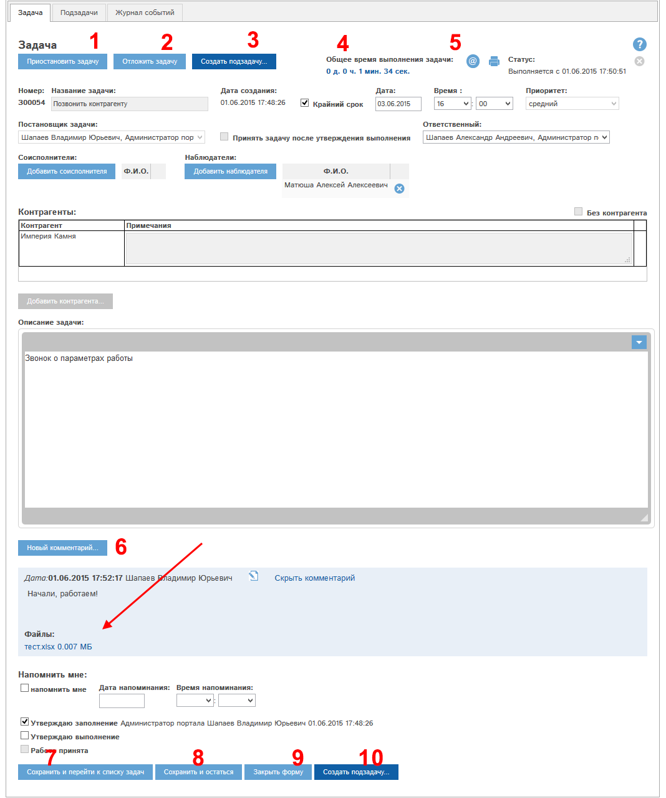
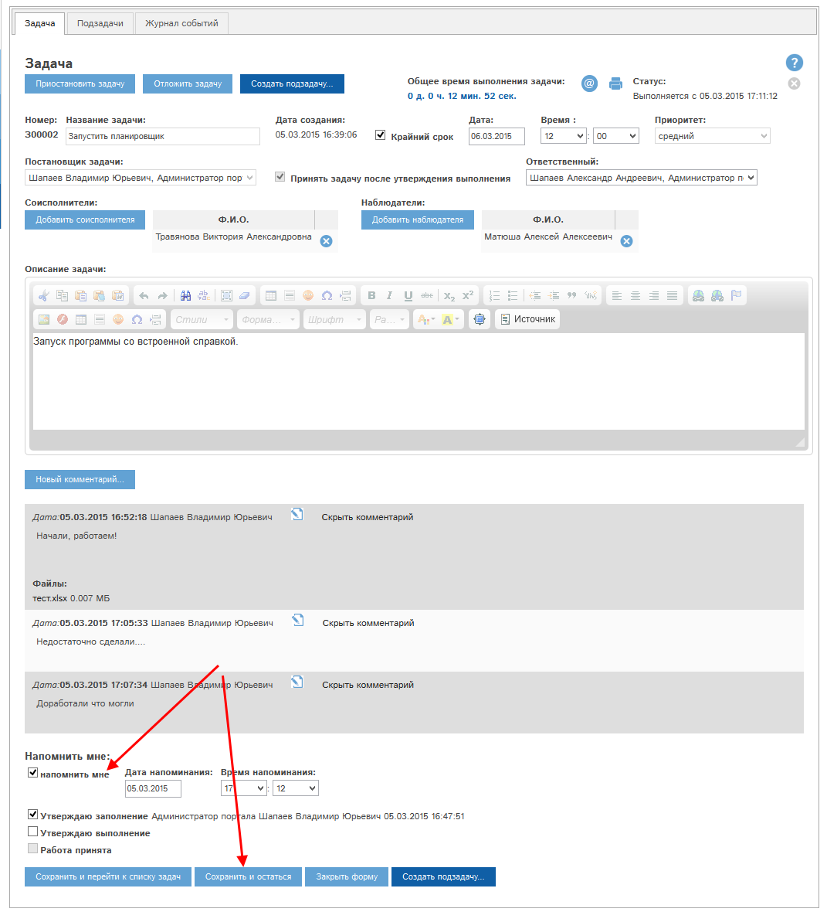

Рассмотрим работу кнопки
Список доступных Вам задач находится в разделе "Планировщик", на вкладке "Задачи":
Рис. Реестр задач.
Наиболее важные графы реестра:
Аналогично прочим реестрам CRM GYDEX, доступна поиск и сортировка по определенным полям.
Рассмотрим подробнее фильтр "Вид задач" (2).
В каждой задаче предусмотрено 4 роли, в которых может выступать тот или иной сотрудник:
Для создания новой задачи необходимо нажать кнопку "Создать событие" над реестром. Откроется окно создания события:
Также Вы можете нажать кнопку "Новая задача" на странице "Быстрые действия".
Рис. Окно создания события планировщика.
В окне необходимо отметить пункт "Задачу", затем нажать ОК. Откроется форма создания задачи:
Рис. Форма создания задачи.
Блок 1: Название задачи.
Блок 2: крайний срок. Если задача подразумевает крайний срок ее выполнения, нужно отметить эту галочку и указать дату и время.
Блок 3: приоритет. В этом поле необходимо указать приоритет задачи. По умолчанию выбран средний приоритет.
Блок 4: постановщик задачи. По умолчанию указаны Вы, можно выбрать другого сотрудника.
Блок 5: Принять задачу после выполнения. Если задача требует приемки выполнения постановщиком , необходимо отметить эту галочку.
Блок 6: Ответственный: необходимо указать ответственного за выполнение задачи сотрудника.
Блок 7: Соисполнители. Можно указать одного или нескольких соисполнителей. Для выбора сотрудников нажмите кнопку "Добавить соисполнителя".
Блок 8: Наблюдатели. Можно указать одного или нескольких наблюдателей. Для выбора сотрудников нажмите кнопку "Добавить соисполнителя".
Блок 9: Связанный с задачей контрагент или несколько контрагентов. Если с задачей не связаны контрагенты, отметьте галочку "Без контрагента".
Блок 10: Описание задачи. Необходимо дать описание задачи. Здесь же - вы можете приложить файлы к задаче.
Блок 11 Напомнить мне. Позволяет создать напоминание о задаче в выбранный период.
Кнопка "Создать задачу" (12) позволяет создать задачу и перейти в реестр командировок.
Кнопка "Создать задачу и остаться в карте" (13) позволяет создать задачу и остаться в ее карте.
Кнопка "Отмена" (14) - закрытие формы без сохранения данных в программе.
Заполним все указанные блоки. Карта задачи примет вид:
Рис. Карта задачи заполнена.
Нажмем "Сохранить задачу и остаться в карте" (13). Откроется форма просмотра/редактирования задачи.
Рис. Карта задачи.
Задача перешла в статус "Ждет выполнения".
Для того, чтобы начать ее выполнение, необходимо нажать кнопку "Приступить к выполнению" (1). Задача перейдет в статус "Выполняется", и начнется отсчет времени ее выполнения в блоке "Общее время выполнения задачи" (4).
Если задачу нужно отложить, над нажать кнопку "Отложить задачу" (2). Задача перейдет в статус "отложена".
Для создания подзадачи, связанной с этой задачей, нужно нажать кнопку "Создать подзадачу" (3). Связанные подзадачи доступны на вкладке "Подзадачи" и в общем реестре задач.
У задачи с утвержденным заполнением становятся активными кнопки (5) (получить печатную форму в pdf-формате) и
(получить печатную форму в pdf-формате) и  (отправить печатную форму в pdf-формате на электронную почту).
(отправить печатную форму в pdf-формате на электронную почту).
Рассмотрим работу кнопки  . При ее нажатии откроется окно выбора адресата:
. При ее нажатии откроется окно выбора адресата:

Рис. Окно выбора адресата.
Для отправки печатной формы на электронную почту необходимо отметить галочками требуемые адреса сотрудников и нажать кнопку "Готово".
Приступим к выполнению задачи. Для этого нажмем кнопку (1). Форма задачи примет вид:

Рис. Задача выполняется.
Задача перешла в статус "выполняется", пошел отсчет времени выполнения в блоке (5), кнопка (1) изменилась и стала кнопкой "Приостановить задачу". Ее нажатие приведет к переходу задачи в статус "Ожидает выполения".
Важный блок!
У задачи после первичного сохранения становится доступным блок "Комментарии" (6). Этот блок необходимо использовать для описания всех этапов работы над задачей, приложения к задаче файлов, отчетности о ее выполнении и т.п.
Напишем комментарий к задаче. Нажмем кнопку "Новый комментарий" в блоке (6), напишем комментарий, приложим файлы:
Затем нажмем кнопку "Отправить комментарий". Комментарий будет добавлен к задаче, и задача примет вид:

Рис. К задаче добавили комментарий.
В зависимости от Ваших прав, Вы можете:
Для того, чтобы утвердить выполнение задачи, необходимо проставить галочку "Утверждаю выполнение", внести соответствующий комментарий в блок (6) (если этого не было сделано), и нажать кнопку (7), либо (8) - сохранить задачу.
Если вы не внесли комментарий об утверждении выполнения - то программа запросит это сделать.
Утвердим выполнение задачи.
Рис. Утверждено выполнение задачи.
В зависимости от наличия галочки "Принять задачу после утверждения выполнения" и Вашей роли в данной задаче, вам могут быть доступны следующие операции:
В нашем примере мы являемся постановщиками задачи, и выполняется п.1. Отправим задачу на доработку. Для этого нажмем кнопку "Отправить на доработку" (1). Программа запросит причину отправки на доработку, введем ее и нажмем Продолжить:
Задача возвращается в статус "Выполняется":
Повторно утвердим выполнение задачи, внесем соответствующий комментарий:
Утвердим прием работы. Для этого отметим галочку "Работа принята" и нажмем "Сохранить и остаться":
Задача перешла в статус "Выполнена". Все поля недоступны для заполнения.
Для задач в статусах, кроме "создана", "выполнена", "аннулирована" доступна функция напоминаний. Вы можете установить себе напоминание об этой задаче.
Для этого в карте задачи нужно отметить галочку "напомнить мне", указать дату напоминания и время напоминания, и затем сохранить карту:

Рис. Установка напоминания о задаче.
В указанное Вами время Вы получите в программе напоминание о задаче:
Рис. Напоминание о задаче.
В окне напоминания можно выбрать дальнейшие действия:
При выборе вариантов 1-2 нужно нажать кнопку Готово в окне напоминания.
Если Вы устанавливаете напоминание при первичном создании задачи, то напоминания в выбранное вами время будут приходить следующим сотрудникам:
Все основные реестры программы могут быть индивидуально сконфигурированы: вы можете указать, какие колонки и в какой последовательности вы желаете видеть. Всегда можно вернуться к стандартному виду реестра. Рассмотрим работу этой функции на примере реестра контрагентов.
Для настройки реестра нажмите кнопку  :
:

Откроется окно настройки. Слева указаны доступные колонки (1), справа - колонки, которые показаны в реестре (2):

Для перемещения столбцов между блоками 1 и 2 выделите требуемые столбцы (можно выделить несколько столбцов, нажав и удерживая ctrl при их выделении), и нажмите кнопку > для перемещения столбцов из доступных в видимые, либо кнопку < для перемещения из видимых в доступные столбцы.
Доступна сортировка видимых столбцов (в блоке 2). Для того, чтобы поднять или опустить столбец или их группу, выделите требуемые столбцы и нажмите  для подъема или
для подъема или  для спуска столбца.
для спуска столбца.
Для того, чтобы сохранить внесенные изменения, нажмите Готово. Реестр обновится, и будут показаны выбранные вами столбцы в выбранной вами последовательности.
Для того, чтобы восстановить стандартный вид реестра, нажмите кнопку "Сделать стандартными".